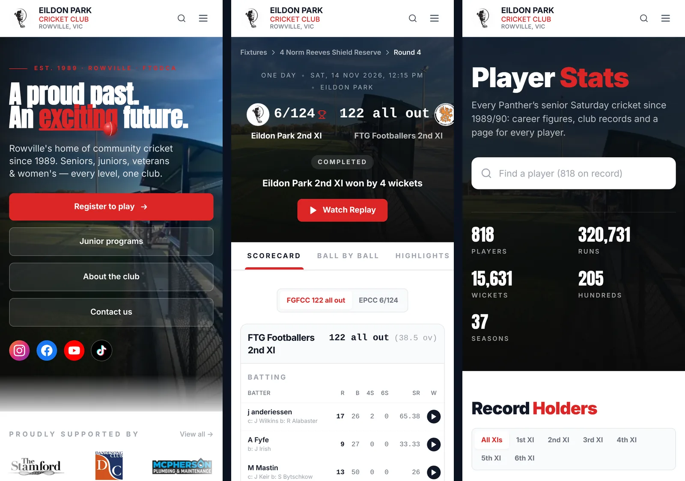
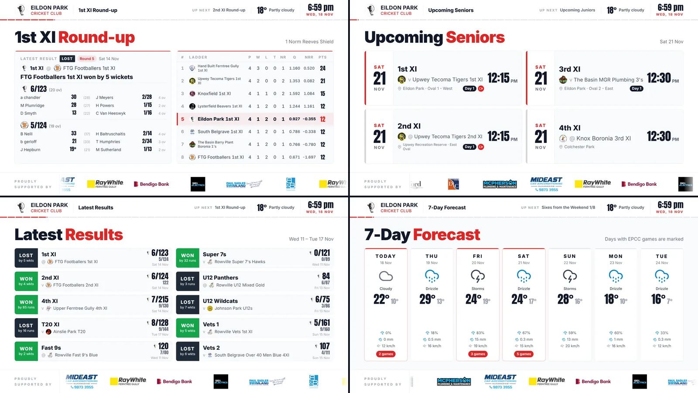

The brief
Eildon Park is a community club in Rowville, in Melbourne’s south-east, with senior, veteran, junior and women’s teams. In early 2026 its online presence was Facebook, Instagram and a dormant Team App page. Nobody searching for a club to join would find it, sponsors had nothing to be shown on, and match reports disappeared down a feed within a week.
I made the case to the committee for a site the club owns, not a page on a platform, and built a working prototype in the first ten days (65 commits). The alternatives on the table were a site builder at $360–$420 a year, or $2,000+ up front for an agency site that would cost more every time it changed. The plan instead was free hosting (GitHub and Netlify), with the domain the only fixed cost. And the goal was never just a website: it was one place for the club’s history, its weekly cricket and its communications, documented well enough that it doesn’t depend on me.
What’s on it





/tv: a self-refreshing slideshow of live scores, round-ups, ladders, results, forecasts, milestones and sponsors, on the TV in the clubrooms.- Stats hub: club totals, record holders, an explorer of every career and season, and a page per player with match-by-match deep dives (every innings and spell, worms, dismissals, partnerships, teammates, milestones).
- Match centre for every game: scorecard, ball-by-ball, highlight clips, graphs, weather, line-ups and the match report.
- Admin portal, invite-only with three roles: news with scheduled publishing, match reports, the events calendar, player profiles, and a mailing list with segments and PlayHQ registration imports.
- Email platform on Amazon SES: branded News and Flyer templates, segment-targeted and scheduled sends, inbox previews, self-service unsubscribe, sent history.
- Highlights editor: cuts branded highlights videos from a match’s Play Cricket clips, in landscape or as a 9:16 reel for TikTok and Instagram, and renders the MP4 entirely in the browser.
- Built for AI search: one schema.org entity across every page,
/llms.txtrebuilt every 30 minutes with live fixtures and results, and a public MCP server, so Claude or ChatGPT can answer questions about the club with live data.
Architecture
One Next.js app on Netlify, serving cached public pages, the admin portal and a few API routes, in front of Supabase and four outside services. The rule that makes it hold together: only lib/ talks to the outside world, and pages and components never do.
Who uses it
- Visitors Players, parents, sponsors, recruits
- Committee Admins in the portal
- Clubroom TV A browser on the wall
- AI assistants Claude, ChatGPT via MCP
Netlify · Next.js 14
- CDN cache Public pages are static (ISR) and refresh in the background, every 5 min to hourly
- Server Actions Every write, one module per domain, each checking the admin first
- API routes Search, uploads, stats rows,
/api/mcp - Scheduled function Every 10 min: resumes due email sends
Data & services
- Supabase Postgres, Auth, Storage; row-level security on every table
- Play Cricket Unofficial API: fixtures, scorecards, ball-by-ball, clips
- Stats archive 4,800 player-season rows since 1989/90, in the repo
- Amazon SES · Open-Meteo Email; weather
The data
The hard part wasn’t the website. It was the data. The club’s history came from records spanning nearly four decades, in inconsistent formats. Three sources now feed one model, so every number on the site is derived, never typed in:
- The archive: a cleaned player-season table of every senior Saturday season from 1989/90 to 2025/26 (4,800 rows: runs, wickets, averages, hundreds, five-fors). Names are normalised to one form per person, and overs are kept in cricket notation (
120.3is 120 overs and 3 balls), not decimals. - Scorecards: 1,100+ Play Cricket scorecards since 2009/10, built into match-level archives that power single-game records (highest scores, best bowling, partnerships, fastest fifties), each player’s match-by-match tab, and an “On this day” feed of 1,600+ fifties, hundreds and four-wicket hauls.
- Live data: from 2026/27 the senior XIs’ figures come straight from Play Cricket, refreshed hourly. A name map links Play Cricket IDs to archive names where they differ, and an archive row for a live season overrides Play Cricket’s figures, so a scoring error can be corrected without touching code.
Adding a season takes no work at all: the leaderboards, profiles and records follow the games.
Decisions that hold it up
Each load-bearing choice is written down as an architecture decision record: the context that forced it, the decision, and what it costs. Six of them:
Public pages are static
WhyThe homepage once took 1.7–3.5 s to first byte, because one Supabase client read cookies, which silently makes a whole route render per request.
CostData can be up to one cache window old, so every write refreshes exactly the pages it changes.
The unofficial API fails soft
WhyPlay Cricket’s API is reverse-engineered, with no documentation or SLA, and endpoints that disagree on shape.
CostIn an outage a section renders empty, never a broken page. New fields are checked against live responses before they’re used.
Invite-only, checked twice
WhyThe site holds a mailing list of members’ and parents’ emails. A login only proves someone has an account.
CostEvery Server Action checks the admin’s role, and every database policy checks it again. Personal data has no public read path.
Sends are resumable batches
Why400+ recipients at SES’s 14 a second outlasts a serverless function. A killed send once left no record of who was missed.
CostAt most one batch of 60 can be duplicated if a process dies mid-batch.
Archive plus live, one model
WhyThirty-six seasons predate Play Cricket’s data, and Play Cricket’s own figures are sometimes wrong.
CostTwo sources to reconcile, by a name map and an explicit override rule rather than by hand.
An MCP server, hand-written
WhyAssistants answer from whatever page they happen to fetch, which can’t answer “how many runs has X made?” for 800+ players.
CostAbout 100 lines, no dependency, checked against the official SDK client. Read-only and public data only, so it needs no auth.
Hard problems
The bugs worth telling are the ones that changed how the system is built.
Middleware doesn’t protect Server Actions
Next.js makes every export of a 'use server' module callable from any page that imports one of them, so an admin-only write behind a protected route isn’t protected at all. I closed it by checking the admin at the top of every action and on uploads, split the actions into one module per domain, and made “every action starts with an auth check” the first rule in the rulebook, with row-level security in Postgres as the backstop.
A rendering bug only production could see
The highlights editor renders MP4s in the browser: hls.js streams each clip into a hidden video element, frames go through WebCodecs’ VideoEncoder into mp4-muxer, and the animated intros are rasterised through SVG <foreignObject>. On the live site, every intro frame failed with “The source image cannot be decoded”. The cause: production’s minified CSS writes font variables in double quotes, which cut an inline style="" attribute short. Development CSS uses single quotes, so it never showed up locally. Moving the declarations into a <style> block fixed it. The same feature also taught me that the muxer rejects every chunk unless the first frame sits at timestamp exactly zero.
Dates that lie about their time zone
Older Play Cricket records store local Melbourne times labelled +00:00, and Netlify runs in UTC, so a naive conversion puts games on the wrong day. Play Cricket dates are now read exactly as written, club-side dates go through one Melbourne time-zone module, and the single-match endpoint, which isn’t shaped like the team list, has its quirks recorded where the next change will see them.
How I build it
I’m the only person working on it, and Claude Code is my primary development tool: in the first eight months, 277 of 531 commits were written by Claude Code sessions, and none reach the live site without a pull request I review. My job is product owner, architect, reviewer and the person who knows the cricket data. The system that keeps that fast and safe is mostly writing:
- A rulebook, not a wiki.
CLAUDE.mdholds the non-negotiable rules, each one there because breaking it caused, or would cause, an outage, a security hole or silent data loss, and each linked to the doc that explains it. - Decisions on record. Architecture decision records (eleven by November 2026), so a later change can’t quietly undo what an earlier one was protecting.
- Docs ship with the code. 40+ Markdown documents (architecture, features, runbooks, a design system, a security model), updated in the same pull request as the change they describe.
- A definition of done. Lint, type-check and production build clean, the change tried in a browser at phone width, and a pull-request template that lists any manual steps outside the code.
- Repeatable jobs as skills. A custom Claude Code skill writes a match report from a game’s Play Cricket scorecard, with season context from both teams’ earlier rounds, and publishes it to the database.
- Cost discipline. Netlify build minutes are rationed, so documentation-only pushes skip the build, and player pages render on first visit rather than at build time.
Still iterating
In the first eight months, something shipped in 29 of 35 weeks. The busy months line up with the cricket calendar: the platform work before the season, the match-day features once games started.
Commits to the site’s main branch, by month (2026)
- March
Prototype for the committee
News, the first stats page, committee, sponsors, weather and a season countdown, in ten days.
- April – June
Foundations
SEO and analytics, a formal design system with tokens and primitives, governance documents, and the first
CLAUDE.md. - July – August
Live cricket and the email platform
Play Cricket integration (fixtures, ladders, scorecards, worm and Manhattan graphs, ball-by-ball, highlight clips), then subscriber imports, segments, scheduled sends, templates and unsubscribe.
- September – October
The season starts
The admin portal redesign, the highlights editor with in-browser MP4 export and reels, live player stats from Play Cricket, the redesigned stats hub, tiered sponsors and the clubroom TV.
- November
Hardening and AI discoverability
Admin actions split by domain, the documentation restructured around eleven ADRs, then
/llms.txt, a club FAQ, one structured-data entity and the public MCP server. - Since
The same loop
Fixes and features through each season, every one through a pull request, and every lesson into the rulebook.